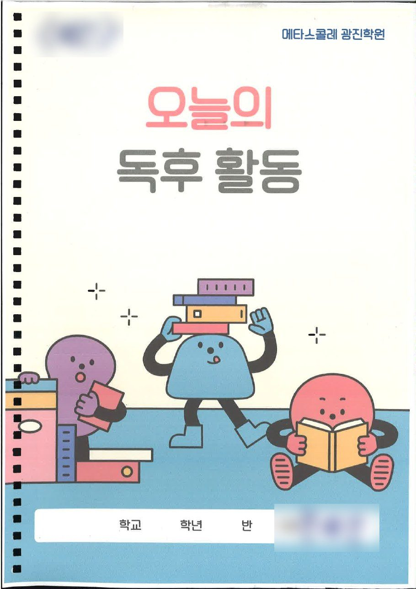
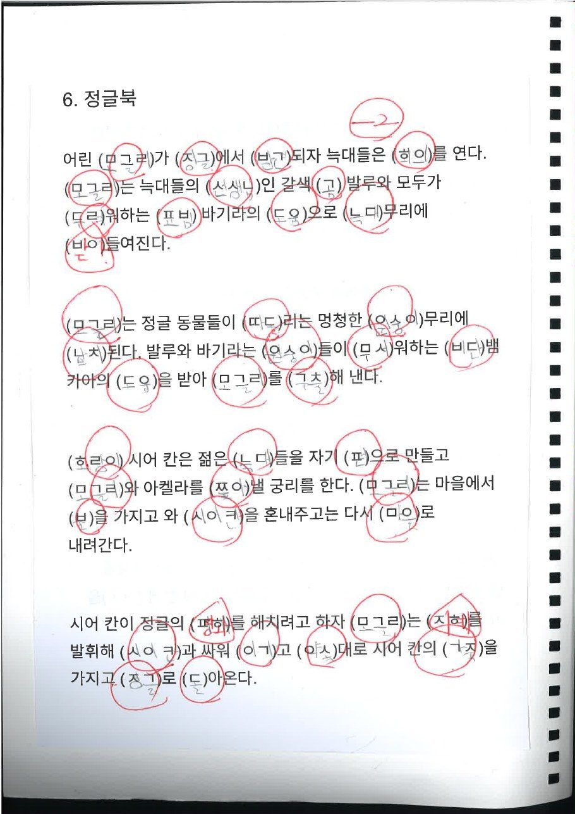
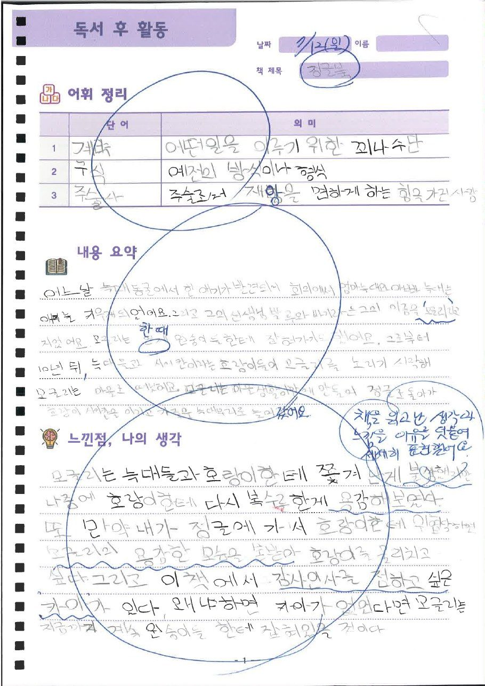
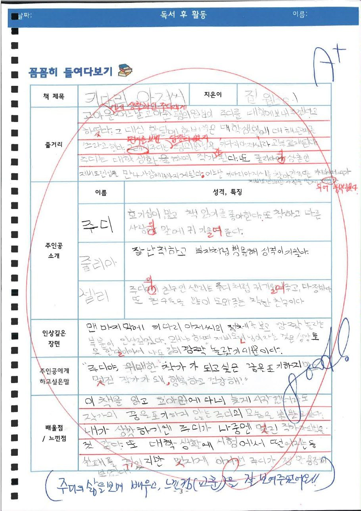
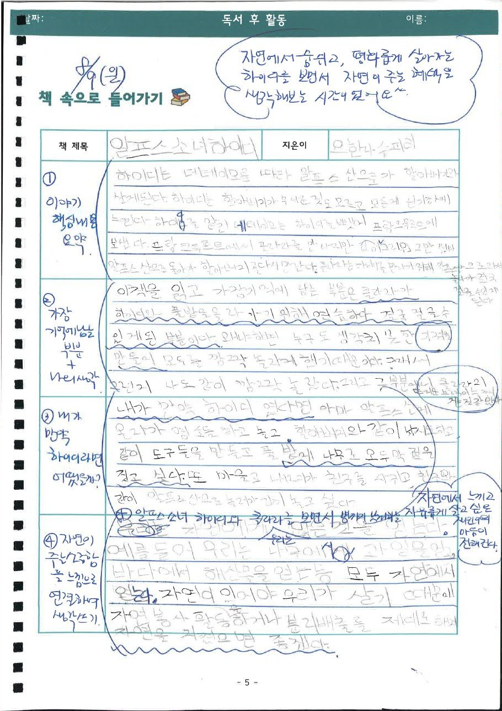
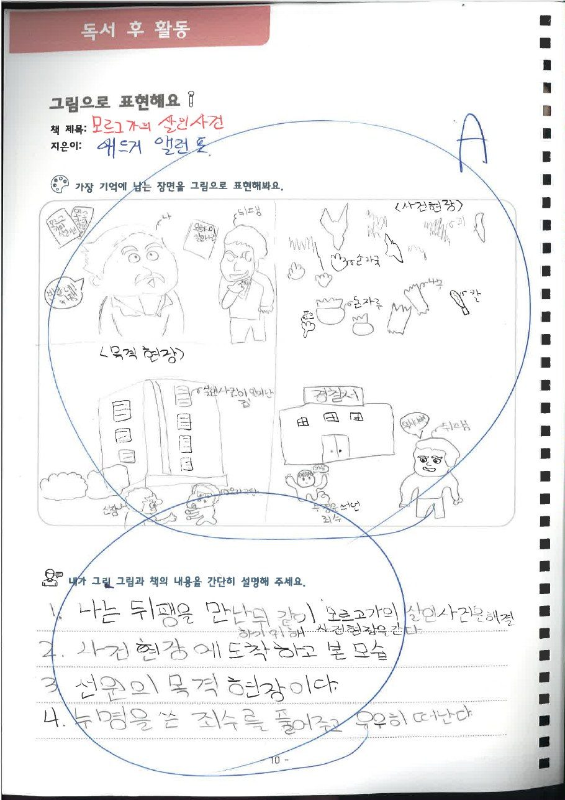
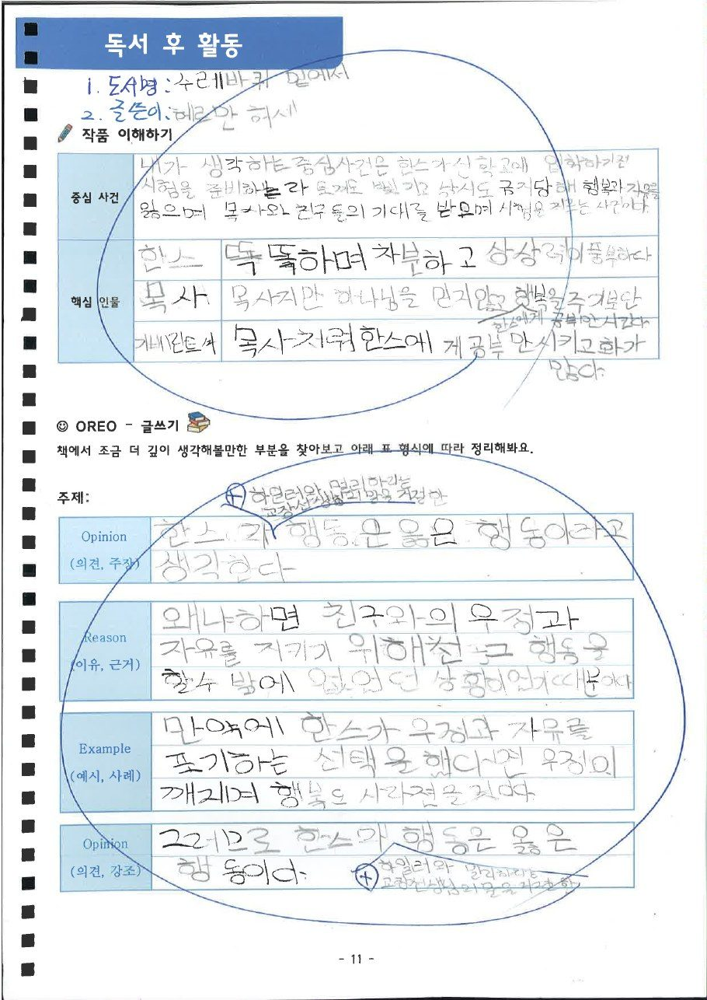

메타스콜레
메타스콜레초등 · 독서책 한 권을 읽고 나면 아이 공책에 남는 것들 · 「오늘의 독후 활동」한 학생이 한 학기 동안 채운 독후 활동 교재를 소개합니다. 줄거리 확인부터 OREO 글쓰기까지, 책 한 권을 깊이 읽는 과정입니다.2026.10
"우리 아이는 책은 많이 읽는데, 무슨 내용이었냐고 물으면 대답을 못 해요." 상담할 때 학부모님들께 가장 많이 듣는 말입니다.
책을 끝까지 읽는 것과 책을 이해하는 것은 다릅니다. 그래서 메타스콜레 광진에서는 책을 다 읽은 뒤가 진짜 수업의 시작입니다. 한 학생이 한 학기 동안 채운 「오늘의 독후 활동」 교재를 보여 드립니다.

이런 책들을 읽었습니다
정글북, 오즈의 마법사, 알프스 소녀 하이디, 키다리 아저씨, 레 미제라블, 톰 아저씨의 오두막, 보물섬, 마지막 잎새, 괴도 신사 아르센 뤼팽, 검은 고양이, 모르그 가의 살인 사건, 몬테크리스토 백작, 수레바퀴 밑에서. 오랜 시간 읽혀 온 세계 명작을 차례로 읽어 나갑니다.
1단계 · 줄거리 빈칸 채우기로 제대로 읽었는지 확인
책을 읽고 나면 줄거리 속 핵심 낱말을 초성 힌트만 보고 채워 넣습니다. 대충 넘겨 읽은 부분은 여기서 바로 드러나고, 틀린 곳은 수업 시간에 다시 짚습니다.
2단계 · 어휘 정리 → 내용 요약 → 나의 생각
모르는 낱말의 뜻을 정리하고, 줄거리를 자기 말로 요약한 다음, 느낀 점과 자기 생각을 씁니다. 요약은 중학교 국어의 독서 영역으로, 생각 쓰기는 수행평가와 서술형으로 이어집니다.


3단계 · 책마다 다른 활동으로 깊이 들여다보기
같은 활동만 반복하면 아이들은 금방 지루해합니다. 그래서 책마다 활동을 바꿉니다.
- 꼼꼼히 들여다보기 · 줄거리, 주인공 성격, 인상 깊은 장면, 주인공에게 하고 싶은 말
- 책 속으로 들어가기 · "내가 주인공이었다면 어떻게 했을까?"
- 뒷이야기 상상해서 쓰기 · 책이 끝난 뒤의 이야기를 직접 이어 쓰기
- 친구에게 소개하기 · 소개하고 싶은 장면을 고르고 그 이유 쓰기
- 그림으로 표현해요 · 가장 기억에 남는 장면을 그리고 설명하기



4단계 · OREO 글쓰기로 논리적인 글 완성
학년이 올라가면 주장글로 넘어갑니다. Opinion(주장), Reason(근거), Example(예시), Opinion(다시 주장)의 순서로 자기 생각을 정리합니다. 서·논술형 평가에서 가장 중요한 "주장과 근거를 갖춘 글"을 이렇게 연습합니다.

모든 글에 선생님의 피드백이 남습니다
사진 속 파란 글씨는 선생님의 피드백입니다. 아이가 쓴 글마다 잘한 점과 고칠 점을 하나하나 적어 줍니다. "책의 내용을 이해하고 시간 순서대로 벌어진 일을 잘 정리했어요." 칭찬 한 줄에 아이는 다음 글을 더 길게, 더 정성껏 씁니다.
읽는 힘이 공부의 힘입니다. 아이가 책을 "읽었다"에서 "이해하고 쓸 수 있다"로 넘어가도록 메타스콜레 광진이 함께하겠습니다.